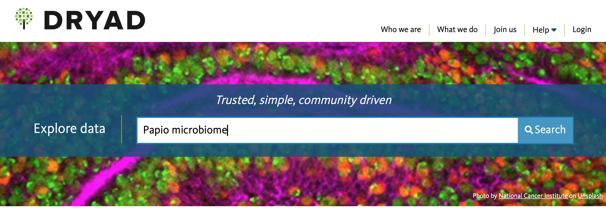
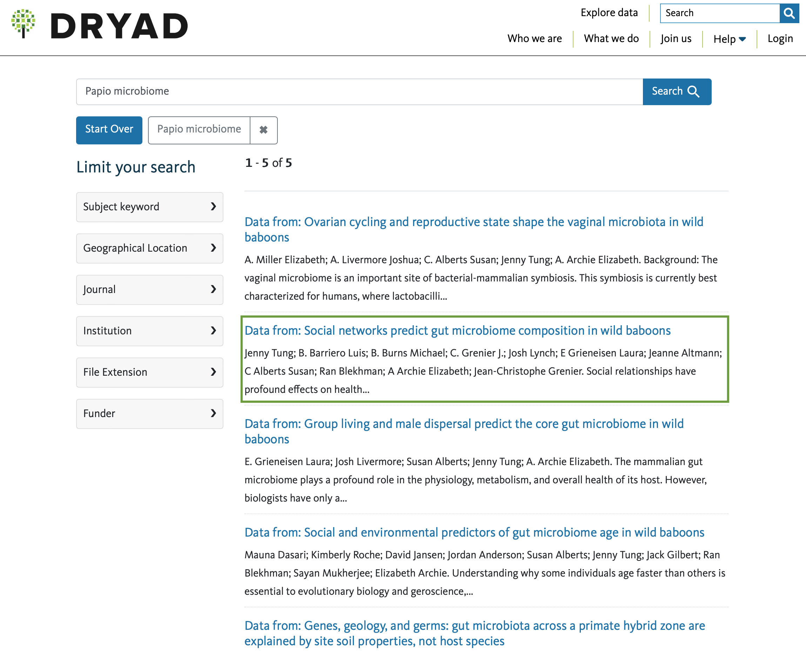
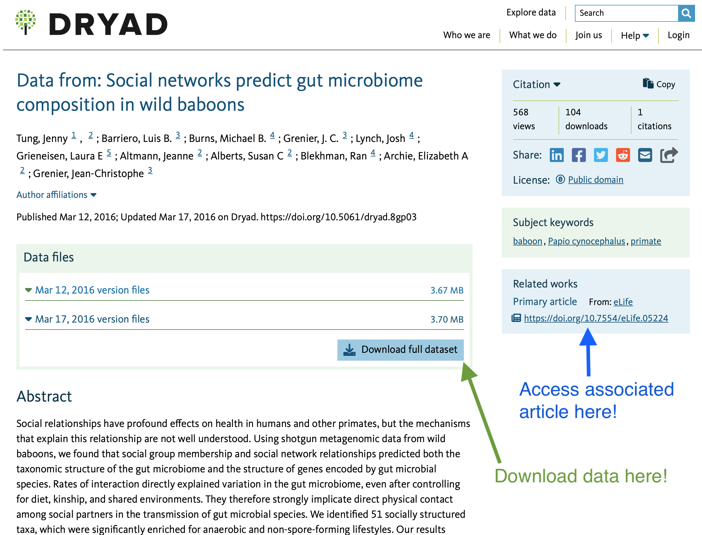

AN/BI 588: Data Replication Assignment
Insurmountable Coding Problems

Final Homework DUE at 5:00 pm of May 01, 2025.
Replication is meant to be one of the keystones of scientific inquiry. Every experiment, observation, or analysis should be replicable by any other scientist, if we’ve all done our jobs right. The objective of this assignment is to use your skills in R to replicate as closely as you can a set of statistical analyses and results reported in a published paper of your choosing.
You should select and confirm with me a paper and dataset you will replicate by February 18, 2025!
You do not need to replicate ALL of the analyses presented in the paper, but at minimum you must replicate at least 3 analyses, including at least one descriptive statistical analysis and one inferential statistical analysis. As part of this assignment, you must also replicate to the best of your abilities at least one figure.
For this assignment, you should prepare several files to share with me via GitHub in a new repo, shared with me as a collaborator, called “BUlogin-AN588-Replication”:- A PDF copy of the paper from which you are replicating analyses.
-
A
.csvfile (you can make this in Excel) with the original data for that paper. -
An
.Rmdfile where you thoroughly describe and run the code for all of the steps in your replication. I should be able to take the.Rmdfile along with the.csvfile and knit it to produce a nicely formatted.htmlreport describing what you did and in which I can easily see your results.
You should also embed in your .Rmd file, near your own
results, any images or figures from the original paper that you
replicate so that I can see them together. These should be included as
.png files in a folder called “img” within your repo. You
can include code like the following to reference files in your “img”
folder for inclusion in your document.
<img src="img/imagename.filetype" width="###px"/>
Where you replace imagename.filetype with the name of your file, e.g., “figure-1.png” and ### with a integer number of pixels, e.g., width=“200px”.
A simpler option with fewer formatting possibilities is to include the picture using this markdown code:

If you include the following chunk at the beginning of your Rmd
document with the headline {r setup, include=FALSE} (which
lays out for R a particular set of
instructions for knitting), it will ensure that all of the figures
created by your chunks of code when it knits will be put directly into
the “img” folder:
> knitr::opts_chunk$set(echo = TRUE, warning = FALSE, comment = "##", prompt = TRUE,
+ tidy = TRUE, tidy.opts = list(width.cutoff = 75), fig.path = "img/")Elements of Your Report
You should start your replication report with a short description of
the study and of the specific data and replication analyses you will be
performing, to orient your reader. Outline (briefly) the goal of the
original paper, the data set used, and the analyses conducted, then
describe which you will replicate. You should also demonstrate how you
read your datafile into R, and show a few
lines of raw data in your output (e.g., using head()).
I will be looking for you to clearly take your reader through all of the elements of data manipulation, analysis, and, where appropriate, visualization. You should provide as much coding detail, explanation, and output tables as necessary to compare your results to those published.
Annotate your code well, and good luck!
Where to find data (and their associated paper)
Students in the past have had a lot of trouble actually finding a relevant article that has associated open-access data available online. This makes replication much more difficult, and is increasingly frowned upon by the scientific community, but is often the standard operating procedure in the sciences (especially when data are proprietary). However, there is much debate about and increasing calls for open-access data, both for replication and more general equity purposes. The National Science Foundation, for example, requires that there be a data management plan including the depositing of data generated by NSF-funded research in public repositories.
Rather than searching for a paper you like and finding that the authors have - for various reasons - not made their data public, you can instead search a public data repository relevant to your field for an appropriate dataset along with the associated published paper. The journal Nature has pulled together links for several such repositories at this handy website.
I strongly recommend starting your search at Dryad. This is a general purpose scientific data repository that is pretty well-liked and well-used by biolgoical anthropologists and biologists more generally.
For example, if I were interested in doing research on the primate
microbiome for my thesis, and so wanted to learn a bit more about the
methods and the baboon (genus Papio) microbiome by replicating
a study on it, I would enter the following into the Dryad
Explore Data tab:

Upon pressing Search, it will take me to every dataset
in Dryad that’s flagged for those two search terms (Papio
and microbiome):

As you can see, there are quite a few! If I’m more interested in
social behavior, I might choose the second option on the list by
clicking on the title of the dataset (i.e.,
Data from: Social networks predict...), which will take me
to the individual data page for that particular dataset:

On the data page, I can read an abstract of the article
associated with the data (to see if it’s what I’m looking for),
access/download the data as the authors have uploaded it to the
repository (see the arrow in green, above; note that some datasets may
have multiple versions of the data… in such cases, I recommend
downloading the most recent!), and also the you can follow a link to the
published article (see the arrow in blue, above).
You probably won’t find a paper that interests you on the first search, but that’s ok. It takes some time to find a paper that both interests you AND contains the kinds of analyses that you 1) would like to replicate, and 2) are actually prepared to replicate.
Please keep that latter point in mind: do not try to replicate something that is too far out of your depth! Think about what you’ve learned (or will learn) in this class and take it from there. If the above paper uses methods you’re not familiar with with (like social network analysis and microbiome analysis), you can check for other modules on the course webpage to see if you can figure it out (for example, there is a Social Network Analysis module… but we do not learn how to analyze microbiome data in this course).
If you want to treat yourself nicely (and we all should) and avoid anxiety (which we all want to do), it would probably be best for you to find another paper with analyses that you will be able to replicate given the tools I’ll help you learn in this course via the standard modules (regression, mixed models, etc).
Additionally, very often authors say they’ve posted open access data - and there is, indeed, a file posted on Dryad - but when you download the file it may turn out to be a huge, incomprehensible mess or in a format that requires proprietary programs to access. Sadly, this is very common. Make sure to actually inspect the data after downloading it to see if you can figure out which variables are where, and to ensure you can envision how you would practically use these data to replicate the analyses in the paper. This is where students often realize they may have to change papers, so make sure to do this before committing to a replication! If you think it’s close to what you want, but you’re not yet sure (for example, if there’s a mixed model and you’re unsure of what you’ll need for it since the module is in April!)… come to my office hours and I’ll help you figure out if it’s appropriate.